Deflocculation
Deflocculation is the magic behind the ceramic casting process, it enables slurries having impossibly low water contents and ware having amazingly low drying shrinkage
Key phrases linking here: deflocculation, deflocculated, deflocculate - Learn more
Details
In ceramics, when we speak of deflocculation, we are almost always talking about making casting slips. Glazes and engobes are also often deflocculated (to reduce water content and densify laydown). The use of deflocculants to minimize water content in clay slurries is also very important for the spray drying process (because the removal of the water is very energy-intensive).
Deflocculation is the process of making a clay slurry that would otherwise be very thick and gooey into a thin pourable consistency (it is the opposite of flocculation). The magic of this process can only be appreciated when you see a thick mud transform into a watery liquid with the addition of a few drops of dispersant (under mechanical mixing action). Deflocculants are electrolyte-sourcing liquids or powders (like sodium silicate, Darvan, Displex) that are added in small amounts. They work their magic by imparting electrical charges to clay particles making them repel each other (more accurately it is said to be a condition where repulsive forces predominate). What follows is intended for people who really want to understand the process. If you are just starting or just evaluating the casting process for viability (in using a native clay) then don't go buying equipment you might not need, just read this to know what is possible and why. Casting slips will often still function well enough even if they are not correctly mixed. Also, be warned that native "wild" clays often contain soluble salts that impede the action of deflocculants, turning the slurry into jelly, there is no practical way to counter this.
Slurries are analyzed as over or under-deflocculated only after it is determined that they are at the correct specific gravity. Over-deflocculated slurries tend to be sticky, livery, produce a powdery cast surface, and settle into a hard layer at the bottom (see info on slight over-deflocculation below). Under-deflocculated slurries gel. A casting slip is a delicate balance of water, powder dynamics, deflocculant, temperature and mix energy (as any of these vary so do the properties of the slurry). Once you have used a slip that has been properly formulated, mixed to the right specific gravity and deflocculated for casting you will never go back to using an inadequate one!
Deflocculants change the viscosity of a slurry without changing its specific gravity (by contrast, adding water to a slurry changes its viscosity by reducing the specific gravity). Thus, to deflocculate a slurry properly it is important to be able to measure its specific gravity and viscosity accurately. Typical casting slurries have a specific gravity between 1.7 and 1.8 (although some are up to 1.825). A bucket of 1.8 SG slurry is very heavy (1.8 times heavier than water).
Here is an example of a middle-temperature casting recipe that delivers about 1.75 specific gravity (in our circumstances):
Dry porcelain powder: 5 Kg
Water: 2.1 kg
Darvan #7: 38 grams
Different types of deflocculants are used in different percentages (for a given specific gravity). This percentage, 0.75% of the dry powder, is large. Some commercial deflocculants (e.g. those used in sanitaryware) are effective in percentages as low as 0.1% (but they cost much more). The amount of deflocculant required increases with specific gravity and, at some point, further additions become ineffective. Each clay body recipe has its own characteristics in this regard, so determining the best compromise between the utility of the slurry and its cost requires patience. It is best to focus on slip quality and stability at first and make small changes with time to reduce costs (e.g. raise the specific gravity). One manufacturer finds that a 30% water content delivers 1.72 specific gravity, the low deflocculant requirement and easy adjustability of the slurry make this conservative approach cost-effective.
Casting recipes "recommend" water and deflocculant amounts. Quality recipes indicate what specific gravity the recommended water content produces. This is a very important concept since casting recipes do not travel well. Users "adapt" a recipe to their process. This is so, both because of all the variables between different production sites (e.g. water electrolytes, material moisture and solubles, temperature, mixing equipment, etc) and also because priorities differ. Variations in water and materials also occur at the same location (with different shipments and seasons). A factory places a much higher priority on using the highest possible specific gravity (to minimize mold wetting) and is prepared for the extra burden of slurry maintenance (they also have the powerful mixing equipment needed). A potter is likely willing to use a slip of lower specific gravity to benefit from the easier mixing and maintenance. A potter might propeller-mix a slurry for minutes, a factory for days.
Thus, mixing a new recipe for the first time is a matter of discovering the amount of water and deflocculant you will need to make it work in your process with your priorities. Depending on the power of mixing equipment available a target viscosity (TG) is set. This TG compensates for the mixing equipment (more viscous if the mixing equipment is powerful and slip mixing can be done for many hours since that will thin the slurry). Generally, this means starting with about 95% of the recommended amount of water and about 75% of the recommended deflocculant. Material is added quickly at first (while mixing) and more and more slowly as the slurry gets heavier and heavier. As the slurry becomes too viscous in the latter stages of adding the dry powder it must be determined if water or deflocculant is needed. A little of the deflocculant held in reserve is added. If a quick response is noted (a thinning of the slurry) more powder is added, otherwise, the water held in reserve is added. This process is continued until all the powder has been added (but hopefully not all the deflocculant). The objective is to mix all the powder into the slurry while assuring its viscosity is a little higher than the TG. Then, something very important is done: The specific gravity (SG) is measured. Since the viscous slurry will not float a hydrometer a weight-volume method of measuring it must be employed. If the SG is above target, water is added and another measurement is done. If it is below target a note is made for the next batch and this batch is accepted as off-spec (meaning that less deflocculant will be needed and it will soak molds faster). If the SG is near the target, then more deflocculant is added (but only to reach the target viscosity). Finally, the slurry is power mixed for the longest possible time and fine-tuned. Notes are kept regarding changes needed in mixing the next batch.
Potters are mostly unaware of the lengths industrial technicians go to to achieve optimal slurry properties. They must constantly fine-tune the contents of slurry tanks (because the age of the slurry, the slip returns, dissolving sulphates from molds and the recycling of scrap all change the rheology). If sulphates are present they add a little barium carbonate to precipitate them. Then, using a lab viscometer to measure the viscosity and thixotropy, they bring the slurry into a condition of slight under-deflocculation and higher-than-needed specific gravity (again, this is practical because they have powerful slurry mixing equipment). Deflocculant is added to reduce the thixotropy to 5 degrees over the required value. Then water is added to increase fluidity to the required value (this usually brings thixotropy in line also). Vigorous mixing is then done (especially if barium was added). Aging is also often done (from 1 to 5 days) to get optimal casting performance.
When one has done a few of these discovery methods of determining the best powder, water, deflocculant recipes he/she is empowered to evaluate and adjust existing slurries and add scrap material to slurry mixes.
Unfortunately, it is very common for slip casters to know nothing about the above, believing that a recipe can simply be followed and by magic, a delicately balanced slurry will be produced. Many will work for years with substandard slip without knowing it, others will throw away all scrap rather than reprocessing it simply because they do not understand slip rheology. A common mistake is mixing slips using plastic clays intended for modelling or sculpture (these are not permeable and shrink too much, far better casting slips can be made using mixes of materials that emphasize permeability instead of plasticity). Notwithstanding these things, when people can accept a lower specific gravity (e.g. 1.6 or 1.7) production can actually be done on easily-cast shapes with poor-quality slip.
If you are starting out with casting slips, perhaps targeting a lower-than-normal-but-easier-to-mix specific gravity of 1.7 would be a good start. Be careful not to make the slip too thin or it will settle out. Aim for bringing it into a state of controlled flocculation. This is where it will gel after a period of time (preventing it from settling out). Such slip stops short of complete deflocculation in the interest of achieving a slurry with better working and suspension properties. It also avoids slight over-deflocculation, when that happens the slip casts slower and the inside surfaces feel powdery or grainy in the leather hard state (pieces also tear more readily at the rim when trimming them with a knife or when they are pulling themselves away from the mold).
Of course, large-scale manufacturers sieve their casting slips (they have vibrating sieves to do that easily). This is most important both to remove agglomerates and because they are adding a percentage of possibly contaminated scrap to the batch recipe. But if you are a potter it is very difficult to coax a thick sticky slurry through an 80 mesh screen (the minimum size). If you only make a few gallons of slip at a time it can be practical to minute-mix 1-2 litres at a time in a kitchen blender, it will not only make it silky smooth but also fast-age it (likely thinning and making it pour better). Another advantage of this is the simplicity of mixing, no need to add ingredients in stages, just put 90% of the deflocculant into the water, dump in all the premixed powder and propeller mix to the slurry state. Then finish it in your kitchen blender.
What about mixing air bubbles into the slurry? Don’t worry about that, if the slip is fluid enough bubbles rise to the top with no problem. If not just a minute with mixer speed set just short of sucking air will surface all the bubbles in no time.
What if you only have a clay body and no amounts for the water or deflocculant? Then use the above recipe as a guide. Losing the first batch is normal, so make a smaller amount. Keep good notes and learn for the next one. An account at insight-live.com is a good place to create an audit trail of this sort of information.
Related Information
Delflocculation accomplishes the seemingly impossible
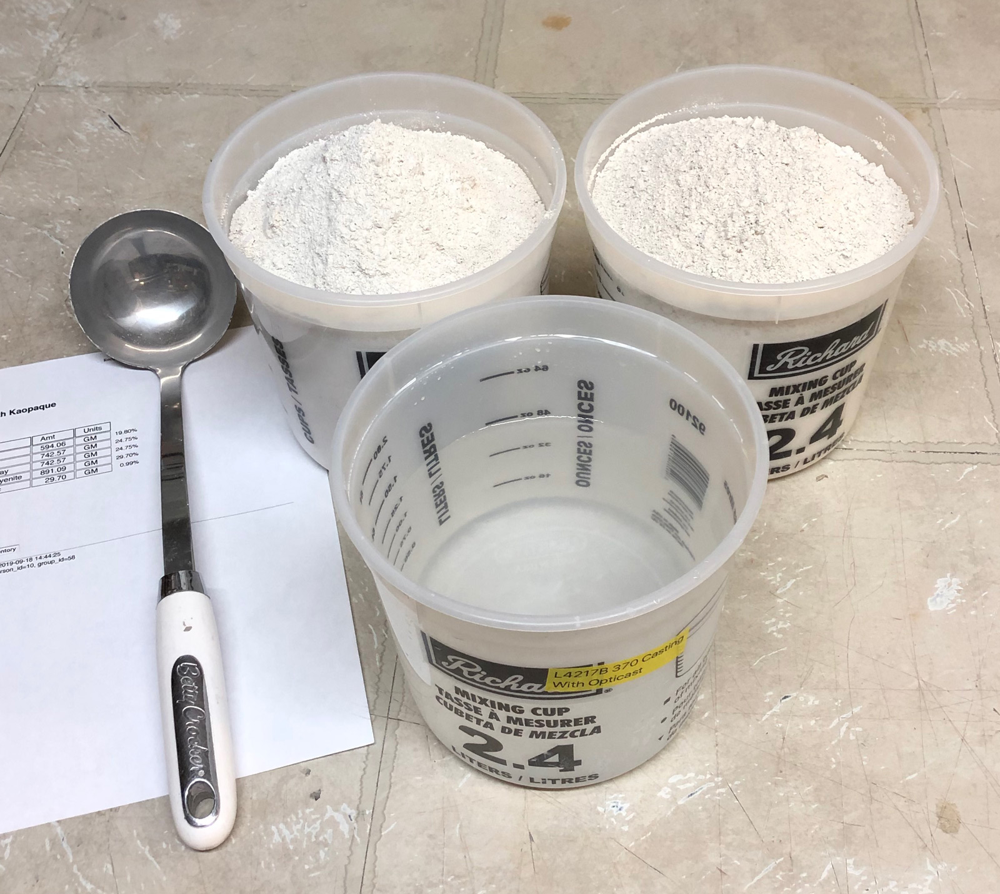
This picture has its own page with more detail, click here to see it.
It is possible to get that 3000g of porcelain powder into this 1100g of water! And the fluid slurry produced, 2250cc, will fit into the front container. How is this even possible? The water has 11 grams of Darvan 7 deflocculant in it, it causes the clay particles to electrolytically repel each other! An awareness of “this magic” can help give you the determination to master deflocculation, the key enabler of the slip casting process. Determination? Yes, the process is fragile, you must develop the ability to “discover” the right amount of Darvan for your clay mix and water supply. And the ability to recognize what is wrong with a slurry that is not working (too much or little water, too much or little deflocculant).
I can mix all this powder into that little bit of water to make a casting slip. How?
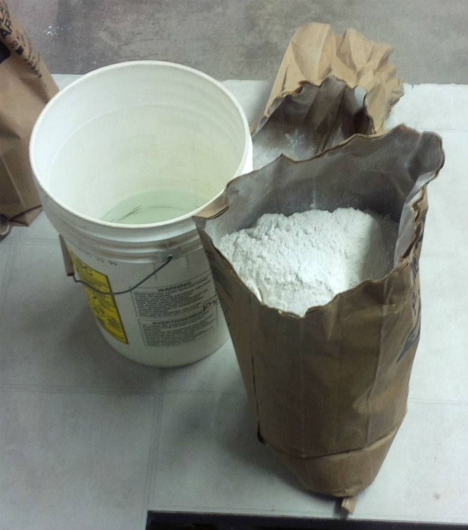
This picture has its own page with more detail, click here to see it.
This is 8.4L of water (in the bottom of that pail) and a 20kg bag of Polar Ice porcelain casting clay. Amazingly, it is possible to get all that powder into that little bit of water and still have a very fluid slurry for casting. The volume will increase to only 2/3 of this 5-gallon pail. How is this possible? That water has 100 grams of Darvan 7 deflocculant in it, it causes the clay particles to repel each other such that I can make a liquid with only a little more water than is in a throwing clay! All it takes is a few minutes under a good power propeller mixer.
This is how much casting slip 10,000 grams of powder makes
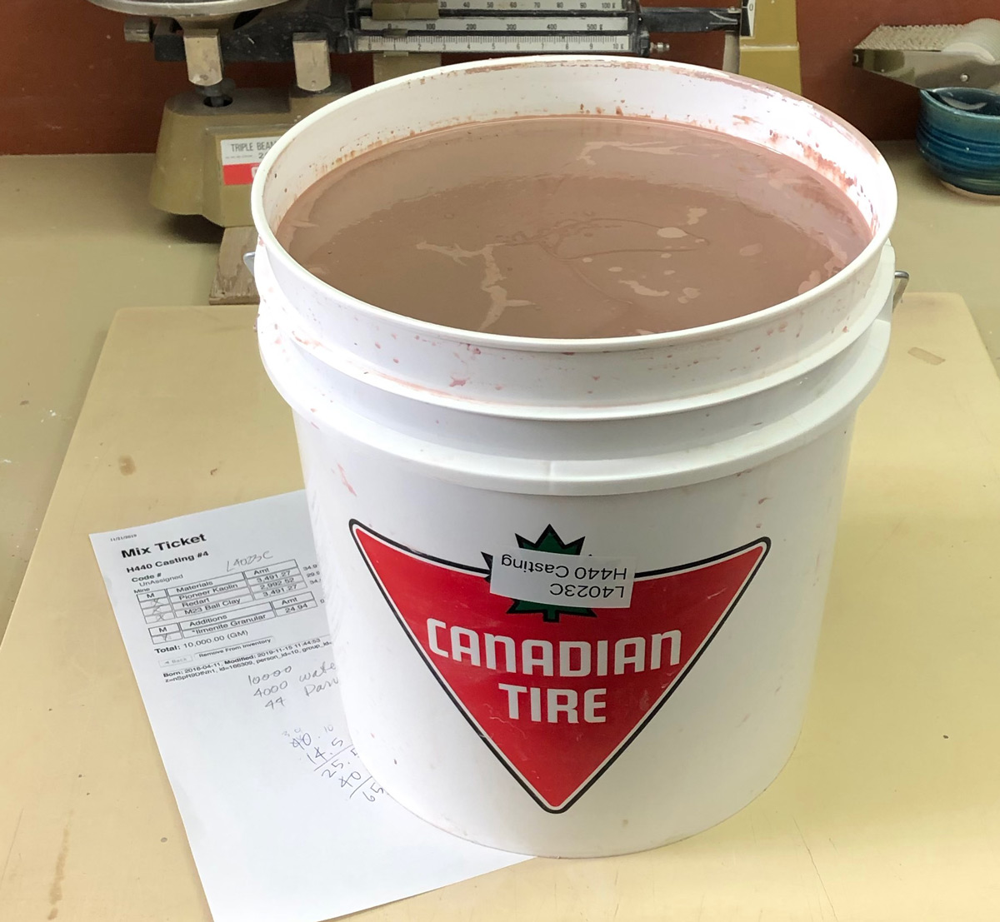
This picture has its own page with more detail, click here to see it.
There are 8.8 liters of slip in this 2 imperial gallon bucket. The cone 10 stoneware slurry was propeller mixed in a larger bucket. First I stirred about 3/4 of the projected 44g of Darvan into 4000g of water. Then I dumped in 10,000g of the powder (shaken in a plastic bag) and let it sit to slake as much as possible. Then I used a high-energy propeller mixer, and to finish, trickling in extra Darvan until the rheology was right. The slip itself thus weighs 14 kg (31 lb) and has a specific gravity of ~1.75. It has sat overnight and formed a film on the top, but has not settled (indicating that it likely is not over deflocculated). The casting process enables even a hobbyist to make his own custom recipes and tune them over time. Would you like to develop a recipe? An account at Insight-live.com is the first step, that’s where you’ll keep all the development notes, pictures and data.
Slip having proper rheology is so much better
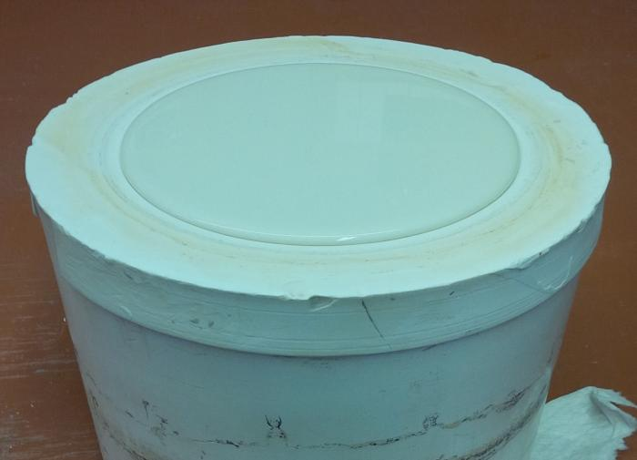
This picture has its own page with more detail, click here to see it.
This deflocculated slurry of 1.79 specific gravity (only 28% water) has just been poured into a mold. The mold is dry, the wall thickness of the bowl will build quickly and the liquid level will sink only slightly. It can be drained in minutes (for a wall thickness of 3-4 mm). The clay is not too plastic (too fine particle sized) so it is permeable enough to enable efficient water migration to the plastic face. If the specific gravity of this slip was too low (too high a percentage of water) the liquid level would sink drastically during the time in the mold, take longer to build up a wall thickness and water-log the mold quickly. If the slip contained too much deflocculant it would cast slower, settle out, form a skin and drain poorly. If it had too little deflocculant it would gel in the mold and be difficult to pour out. The rheology is just right.
New Zealand kaolin based slip casts at 1mm thickness. How?
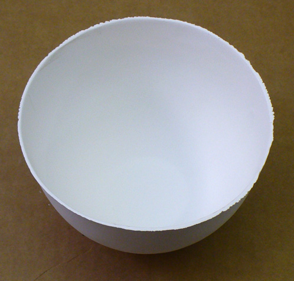
This picture has its own page with more detail, click here to see it.
This is Polar Ice casting, a New Zealand Halloysite based cone 6 translucent porcelain. The base body recipe would never have enough plastic strength to pull itself from this mold without tearing. But the addition of 1% Veegum gives it amazing strength. This dried cast bowl measures 130mm in diameter and 85mm deep, it only weighs 89 gm! The slip was in the mold for only 1 minute before pour-out. Of course, there is a price to pay for adding the Veegum: Increased casting time and more difficult deflocculation. Regular bentonite can be used in most bodies, but for super-whites like this, Veegum (or equivalent) is the choice. Testing is needed to determine what percentage gives the needed strength yet does not increase the casting time too much. The polar ice information page at plainsmanclays.com has very good information, under the heading “Casting Recipe”, about the challenges and trade-offs of using this kaolin in casting bodies.
A viscosity deflocculation curve
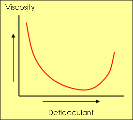
This picture has its own page with more detail, click here to see it.
As the amount of defloccuant is increased the viscosity drops and the slurry becomes more and more fluid. However, at some point, the slurry will begin to become more viscous with increasing deflocculant percentages. This underscores the importance of tuning your casting slip recipes to avoid this problem. It is actually better to deflocculate to a point before the curve reaches its minimum (where the slope is still downward). This "controlled state of flocculation" enables the slip to gel after a period of time (to prevent sedimentation) and avoids the issues that come with over-deflocculation.
Here is how vigorously a deflocculated ceramic slurry should be mixed
A video of the kind of agitation needed from a propeller mixer to get the best properties out of a deflocculated slurry. This is Plainsman Polar Ice mixing in a 5-gallon pail. Although it is quite plastic compared to industrial casting slips, it has a specific gravity of 1.76, is very fluid and casts well in the hands of a potter. These properties are a product of, not just the recipe, but the mixer and its ability to put high energy into the slurry.
Confirming slip viscosity using a paint-measuring device
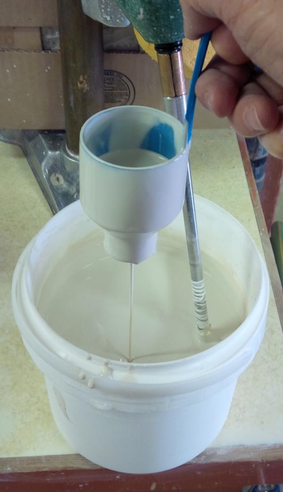
This picture has its own page with more detail, click here to see it.
A Ford Cup is being using to measure the viscosity of a casting slip. These are available at paint supply stores. This is a #4 (4.25mm opening), it holds 100ml and drains water in 10 seconds. This casting slip has a specific gravity of 1.79. Having made it many times, our experience indicates 40-seconds as a drain target (after high energy mixing). In production situations, the seconds-value this test produces enables an audit-trail for quality control and problem solving. When first mixing a slurry, under-deflocculating and eye-balling the viscosity is typical, during that period the slurry gels while draining and Ford cup measurements are not valid. When the mixing process has been perfected and viscosity stabilized the Ford Cup becomes practical.
Don’t overthink this type of measurement or the type of cup or opening size (you can even make your own cup). You must still determine the optimal flow rate based on experience with your process. This technique is more about maintaining to ongoing adherence to a standard you define.
Measure specific gravity using a scale and measuring cup
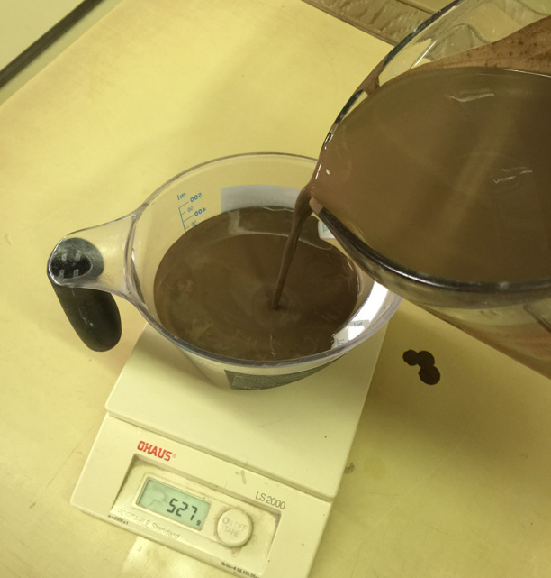
This picture has its own page with more detail, click here to see it.
The specific gravity of a suspension is simply its weight compared to water (water weighs 1g per cc). For example, different glazes optimize to different specific gravities (e.g. 1.45 is typical for stoneware glazes). Casting slips typically have specific gravities of 1.75-1.8. This plastic measuring cup accommodates 500g. I have already counter-weighed it on our 0.1g scale and filled it with 500 grams of water to verify the accuracy of the 500g marking (mark the correct level with a felt pen or sticker if needed). Now, I am filling the cup with the slurry to the same level. The specific gravity will be that weight divided by 500.
When to use a hydrometer and when not to
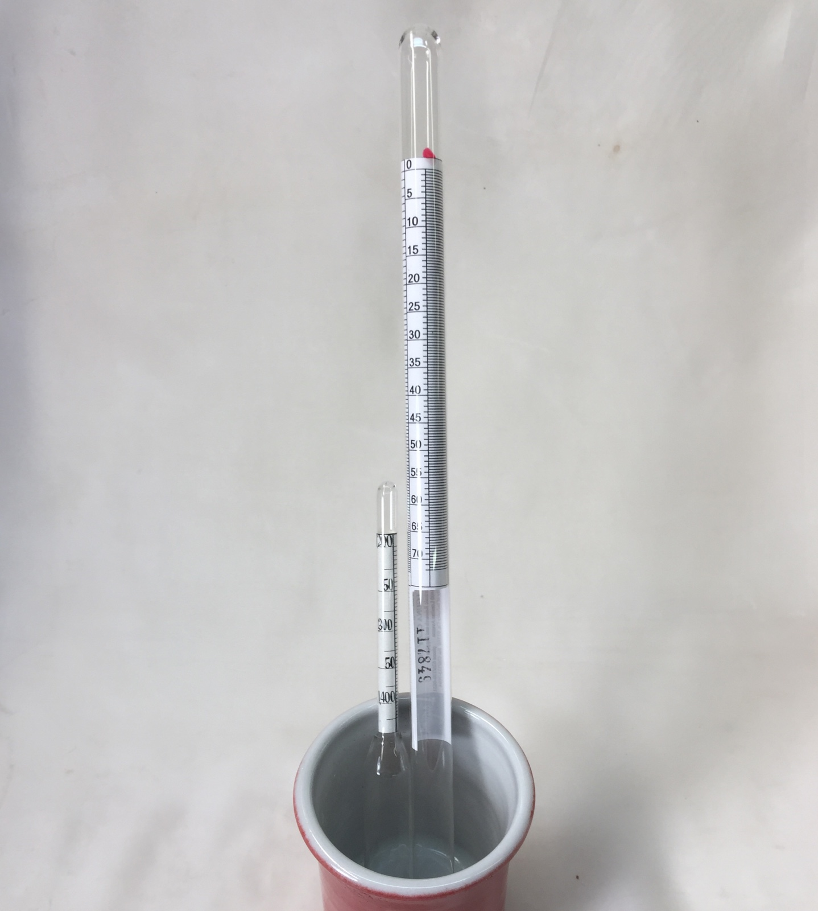
This picture has its own page with more detail, click here to see it.
If a glaze has already been mixed and gelled to give it thixotropy these things won't bob up and down to home in on the right level. If the glaze is watery enough there are other issues. The one on the right has a 1.0-1.7 scale. Since most pottery glazes need to be 1.4-1.5 specific gravity (40-50 on this scale) it is difficult to get a very accurate reading. And it is long, you will need a container tall enough to float it and enough glaze to fill it. The small hydrometer appears better, it has a scale of 1.2 to 1.45. But it really bobs up and down (so it is even more important that the slurry be runny and thin to give it the freedom to do so). But glaze slurries are creamy. So it is better to weigh a measured volume of glaze slurry and calculate the SG instead. The easiest is a 100cc graduated cylinder (from Amazon.com), if 100 ccs weighs 140 grams, that is 1.4 specific gravity. You don't even have to pour in 100cc, just pour in any amount and divide the weight by the amount.
Fine tuning the amount of Darvan in a terra cotta slurry
This is slurry is made of 80% Redart and 20% KT1-4 ball clay. It has very good casting properties IF it is deflocculated well (smaller pieces can be cast in 10 minutes and extracted from the mold in another 10). However high-iron slurries are notorious for gelling, either right away during mixing or later. Sometimes a slurry seems to pour well into a mold but 10 minutes later it has gelled so much that vigorous shaking is need to loosen it enough to pour it back out (even then much may hang on in corners). A batch of slurry may need extra deflocculant several times over the first few days of being used. Davan 811 is often used for these. More deflocculant is needed, in this case about 1 gram for each 100 grams of powdered clay.
A casting slip of 1.9 specific gravity. Should we use it?
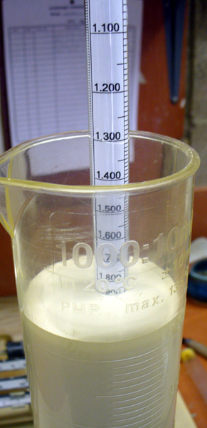
This picture has its own page with more detail, click here to see it.
A hydrometer is being used to check the specific gravity of a ceramic casting slip in a graduated cylinder. Common traditional clay-containing ceramic slips are usually maintained around 1.75-1.8. In this case the slurry was too heavy, almost 1.9. Yet it is very fluid, why is this? It has both too much clay and too much deflocculant. While it is possible to use such a slip, it will not drain as well and it will gel too quickly as it stands. It is better to settle for a lower specific gravity (where you can control the thixotropy and it is easier to use). It might have been better to simply fill a 100cc cylinder and weigh it to get the specific gravity (slurries that are very viscous do not permit hydrometers to float freely).
Over-deflocculated ceramic slurry forms a skin
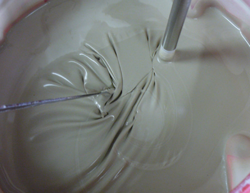
This picture has its own page with more detail, click here to see it.
In this instance, the slurry forms a skin a few minutes after the mixer has stopped. Casting recipes do not travel well. Over-deflocculation is a danger when simply using the percentage of water and deflocculant shown. Variables in water electrolytes, solubles in materials, mixing equipment and procedures, temperature and production requirements (and other factors) necessitate adapting recipes of others to your circumstances. Add less than the recommended deflocculant to try and reach the specific gravity you want. If the slurry is too viscous (after vigorous mixing), then add more deflocculant. At times, more than what is recommended in your recipe will be needed. After all of this you will be in a position to lock-down a recipe for your production. However flexibility is still needed (for changing materials, water, seasons, etc).
Over deflocculated vs. under deflocculated ceramic slurry
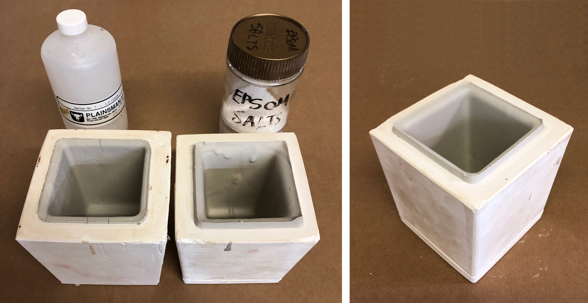
This picture has its own page with more detail, click here to see it.
The slip on the right has way too much Darvan deflocculant. Because the new recipe substitutes a large-particle kaolin for the original fine-particled material, it only requires about half the amount of Darvan. Underestimating that fact, I put in three-quarters of the amount. The over-deflocculated slurry cast too thin, is not releasing from the mold (therefore cracking) and the surface is dusty and grainy even though the clay is still very damp. On my second attempt I under-supplied the Darvan. That slurry gelled, did not drain well at all and it cast too thick. On the third attempt I hit the jackpot! Not only does it have 1.8 specific gravity (SG), but the slurry flowed really well, cast quickly, drained perfectly and the piece released from the mold in five minutes. Interestingly, on a fourth mix I made an error, putting in too much water, getting 1.6SG. The casting behavior was similar to the over-deflocculated slip (even though the Darvan content was much lower). A good casting slip is a combination of a good recipe, the right SG and the correct level of deflocculation.
Even slight over-deflocculation of casting slips can be a problem
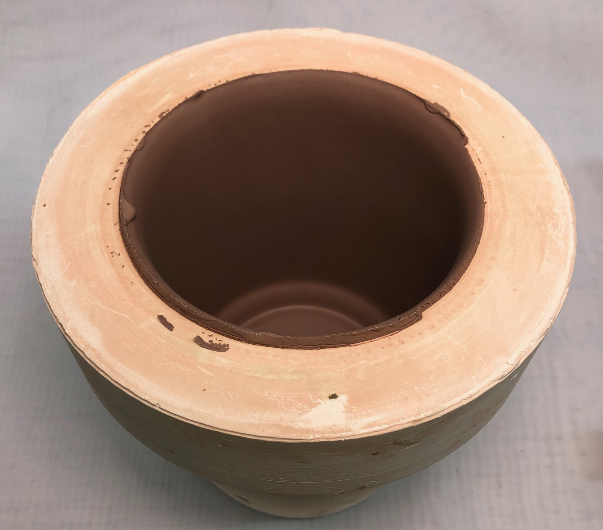
This picture has its own page with more detail, click here to see it.
This is the L3798E cone 6 buff-burning stoneware slip (it is 35% KT1-4 ball clay, 25% silica, 12% nepheline, 15% EPK, 13% Redart). This recipe was easy to deflocculate to 1.8 specific gravity and yet it was very thin and runny. It pours nicely and does not gel. The former recipe was using a plastic ball clay and this switches it to a larger particle ball clay intended for casting. Thus the amount of deflocculant needed is less. But we did not reduce it, that's why it is so fluid. While not fluid enough to settle out or have poor draining properties, it is nevertheless, slightly over deflocculated. Although pieces can be extracted from the mold quickly, casting time is longer than it should be (for this one 15 minutes for a 2mm thick wall). Another issue is the inside surface: It should feel soapy and smooth in the leather hard state, but it feels sandy! This underscores the need for controlled flocculation (using less deflocculant) to maintain at a slightly more viscous fluidity so that it has thixotropy.
Fundamentals of Fluid Mechanics - book

This picture has its own page with more detail, click here to see it.
Many aspects of ceramic production relate to the control of fluids (mostly suspensions). This is also true of material production. If you want to solve problems and optimize your process this is invaluable knowledge. This book is available at amazon.com.
Inbound Photo Links
|
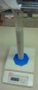 Are cheap plastic graduated cylinders useful? Yes, you can calibrate them yourself. |
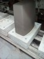 Over deflocculated slip causes instability in toilet tank |
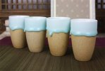 Drip glazing and bare outsides: Deceptively difficult. |
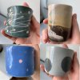 Another compelling reason for DIY casting bodies and glazes |
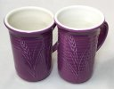 Why mid-fire Grolleg porcelain is ideal for both throwing and casting |
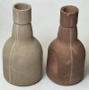 The bottle on the right was cast from over-deflocculated slip |
Links
| Articles |
Stoneware Casting Body Recipes
Some starting recipes for stoneware and porcelain with information on how to adjust and adapt them |
| Articles |
Understanding the Terra Cotta Slip Casting Recipes In North America
This article helps you understand a good recipe for a red casting body so that you will have control and adjustability. |
| Articles |
Understanding the Deflocculation Process in Slip Casting
Understanding the magic of deflocculation and how to measure specific gravity and viscosity, and how to interpret the results of these tests to adjust the slip, these are the key to controlling a casting process. |
| Articles |
Deflocculants: A Detailed Overview
A detailed look and what deflocculation is, what the most common types of deflocculants are (there are many) and how they compare in function |
| Glossary |
Flocculation
The flocculation process enables technicians in ceramics to create an engobe or glaze slurry that gels and goes on to ware in a thick yet even, non-dripping layer. |
| Glossary |
Viscosity
In ceramic slurries (especially casting slips, but also glazes) the degree of fluidity of the suspension is important to its performance. |
| Glossary |
Thixotropy
Thixotropy is a property of ceramic slurries of high water content. Thixotropic suspensions flow when moving but gel after sitting (for a few moments more depending on application). This phenomenon is helpful in getting even, drip-free glaze coverage. |
| Glossary |
Rheology
In ceramics, this term refers to the flow and gel properties of a glaze or body suspension (made from water and mineral powders, with possible additives, deflocculants, modifiers). |
| Glossary |
Water in Ceramics
Water is the most important ceramic material, it is present every body, glaze or engobe and either the enabler or a participant in almost every ceramic process and phenomena. |
| Glossary |
Sulfates
Soluble sulfates in clay produce efflorescence, an unsightly scum that mars the fired surface of structural and functional ceramic products. |
| Glossary |
Zeta Potential
|
| Glossary |
Slip Casting
A method of forming ceramics. A deflocculated (low water content) slurry is poured into absorbent plaster molds. As it sits in the mold, usually 10+ minutes, a layer builds against the mold walls. When thick enough the mold is drained. |
| Glossary |
Spray Glazing
In ceramic industry glazes are often sprayed, especially in sanitary ware. The technique is important. |
| Glossary |
Specific gravity
In ceramics, the specific gravity of slurries tells us their water-to-solids ratio. That ratio is a key indicator of performance and enabler of consistency. |
| Materials |
Ball Clay
A fine particled highly plastic secondary clay used mainly to impart plasticity to clay and porcelain bodies and to suspend glaze, slips and engobe slurries. |
| Materials |
Boron Nitride
|
| Materials |
Boron Carbide
|
| Projects |
Properties
|
 PayPal | No tracking, No ads, No paywall, No transient content! Just organized, concise information constantly updated and improved. Was this helpful? Consider supporting me. |
| By Tony Hansen Follow me on        |  |
Got a Question?
Buy me a coffee and we can talk 

https://digitalfire.com, All Rights Reserved
Privacy Policy